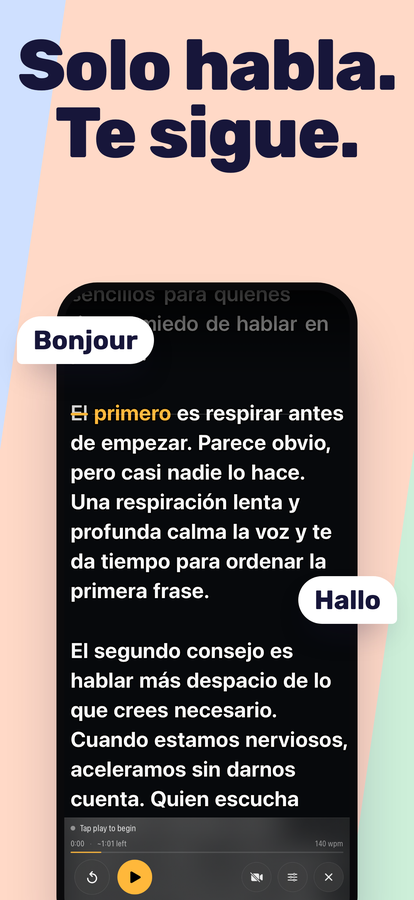
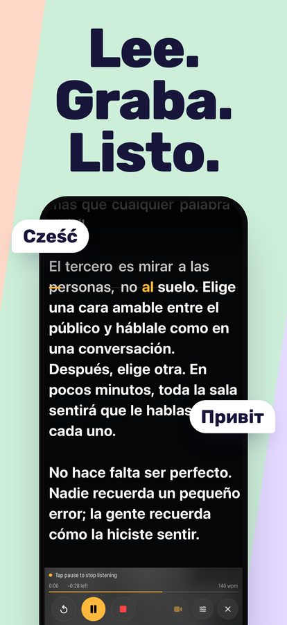
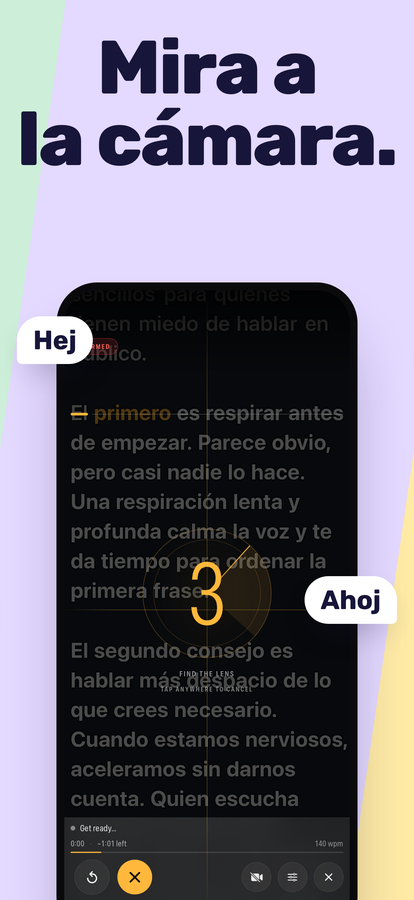
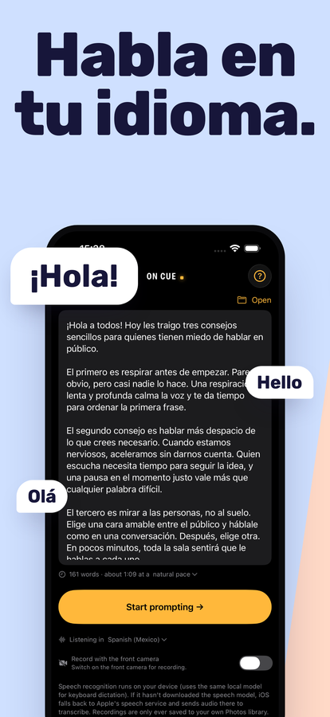

Un teleprompter que sigue tu voz.
Habla, y el guion avanza contigo. Para, y espera. Cambia una frase, sáltate una palabra o arranca una frase de nuevo: no pierde tu lugar, porque escucha lo que realmente dices en vez de avanzar a una velocidad fija que tú tienes que perseguir.
Descargar en App StoreiPhone y iPad · iOS 16 o posterior · Pago único, sin suscripción, sin cuenta




Qué hace
Sigue tu voz
El reconocimiento de voz compara lo que dices con tu guion y mantiene la línea en la que vas sobre la línea de lectura. Haz todas las pausas que quieras. Para subir o bajar una línea sin tocar el teléfono, di “scroll up” o “scroll down” (los comandos de voz son en inglés).
Te escucha en tu idioma
On Cue reconoce el idioma del guion que abres y empieza a escucharte en ese idioma: español, italiano o cualquier idioma que reconozca tu iPhone. La primera vez, arranca con el idioma de tu iPhone.
Graba mientras lees
Un toque y empieza a escuchar y a grabar al mismo tiempo. Grabación con la cámara frontal con el guion encima, guardada directo en la app Fotos, con la resolución y los cuadros por segundo que soporte tu dispositivo.
Aguanta la improvisación
Salirte del guion es lo normal, no un error. Salta adelante o improvisa una frase: te vuelve a encontrar en lugar de quedarse parado esperando una palabra que nunca dijiste.
Hecho para leer
Tamaño de texto y márgenes ajustables, cuatro alineaciones, una línea de lectura que puedes arrastrar cerca del lente y contraste por palabra para que el guion se siga leyendo sobre una imagen clara.
Sabe cuánto dura
Conteo de palabras y duración estimada mientras escribes. Tiempo transcurrido, tiempo restante y tu ritmo mientras hablas, medido con la velocidad a la que realmente hablas, no supuesto.
Se queda en tu dispositivo
On Cue no envía tu guion ni tus grabaciones a ningún lado. El reconocimiento de voz se ejecuta en el propio dispositivo siempre que iOS lo permite.